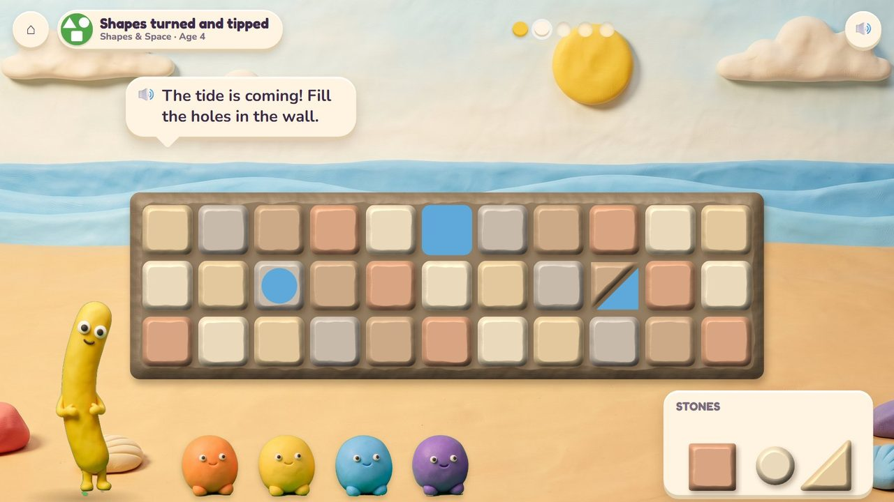
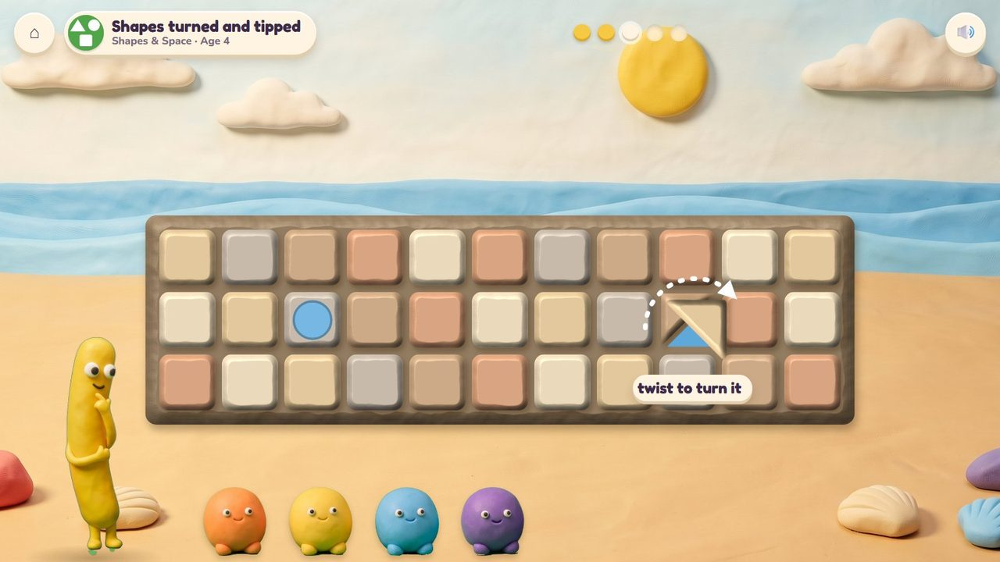
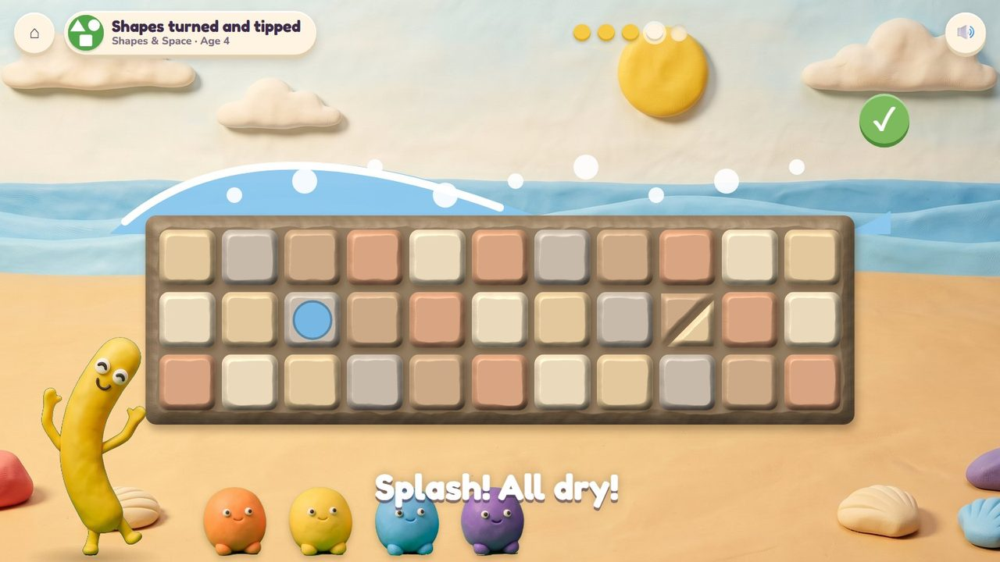
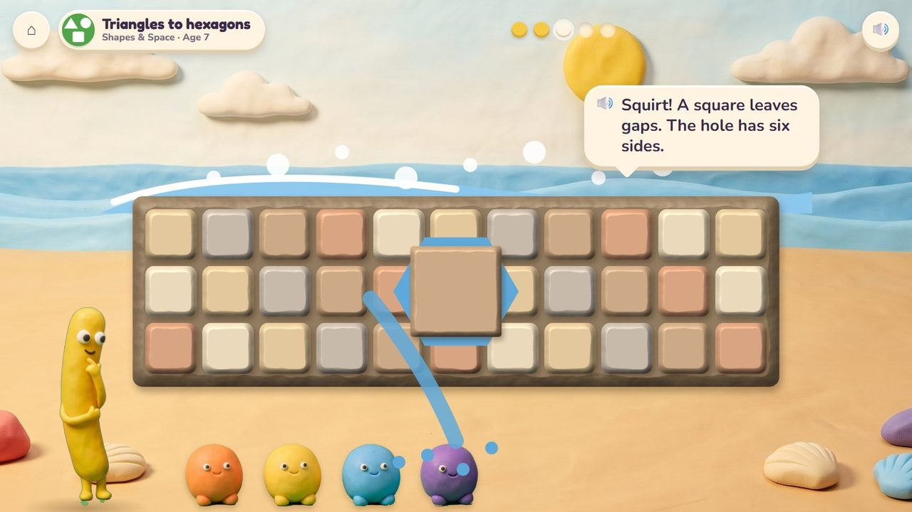
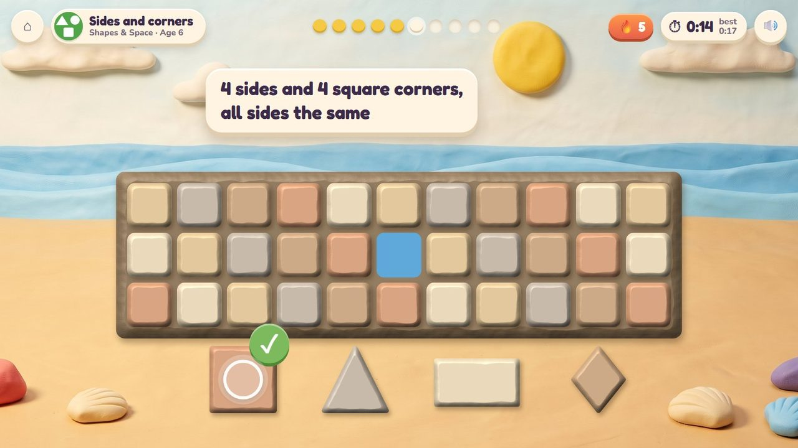
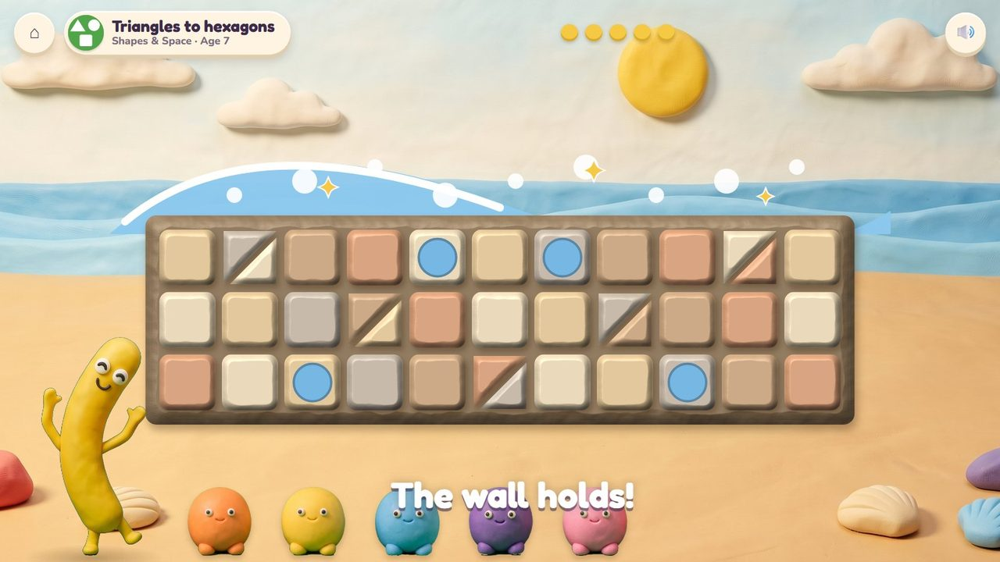
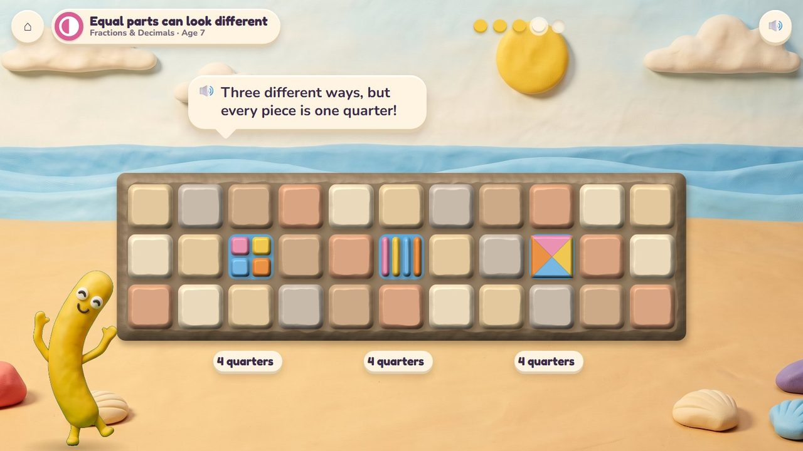
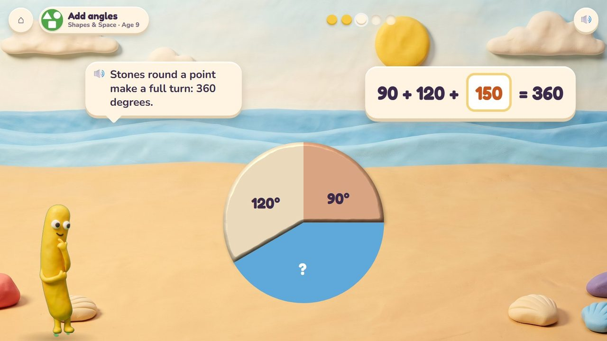
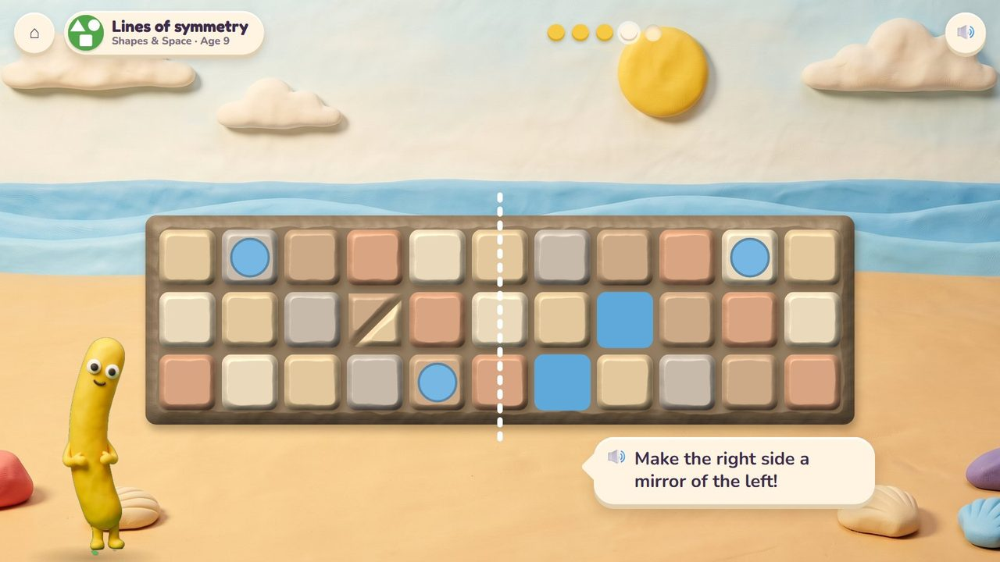
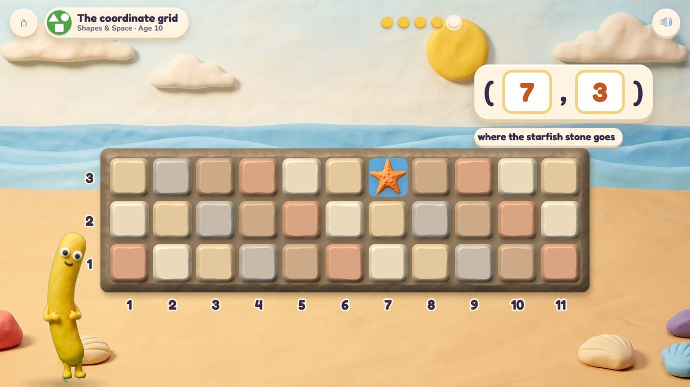

The tide is coming: fill the gaps in the sea wall with the right shapes.
57 lessons (44 taught here first, the rest practised here) in 4 topics:
Fractions & DecimalsMeasuringShapes & SpacePatterns & Graphs

The Peeps' beach is kept dry by a clay sea wall, and the wall has gaps. The child picks the stone that fills each gap exactly and turns it to fit. Then the wave tests the wall: no gaps, and it splashes off while the Peeps stay dry; a gap, and a jet of water squirts through. Shapes and their names, sides and corners, putting shapes together, equal parts, angles that meet at a point, symmetry and, with numbers on the wall, the coordinate grid.
Drag a stone into a gap, twist it to turn, tap the stone that fits a clue.
The wall holds the big wave, and the stones the child placed make a mosaic on it.
A storyboard of the game in one lesson, drawn from the app's own clay pictures.
Three gaps in the wall, three stones in the tray.
🔊 “The tide is coming! Fill the holes in the wall.”

The triangle is the wrong way round: twist it.

No gaps: the wave splashes off and the Peeps stay dry.

A square in a six-sided hole leaves gaps: the water squirts through.
🔊 “Squirt! A square leaves gaps. The hole has six sides.”

Tap the stone that fits the clue. Timed.

The finished wall, a mosaic, holds the big wave.
A gap and its clue are shown ("4 equal sides and 4 square corners"): tap the stone that fits, or type how many sides. Ten questions at 6-7, a 60-second round from 8; your time and your best on screen; only right answers count; a miss shows the answer and comes back later. No clock under 6.
The badge at the top left says the topic, the lesson and the age.

Three square gaps, each filled with four quarters, three different ways.

Stones round a point make a full turn: 90 + 120 + ? = 360.

Make the right side of the wall a mirror of the left.

Numbers on the wall: the starfish stone goes at (7, 3).
| Age 3Pre-school | Circles, squares and triangles: put each stone in its hole. |
| Age 4Pre-K | Rectangles and ovals; shapes turned and tipped (twist the stone to fit); sides and corners. |
| Age 5Kindergarten | Shapes of any size or turn; put shapes together (two triangles fill a square gap). |
| Age 6Grade 1 | What makes a triangle; build shapes with given sides; half circles and quarter circles; halves and quarters. |
| Age 7Grade 2 | Triangles to hexagons; equal parts can look different; a rectangle split into squares. |
| Age 8Grade 3 | Rhombus, rectangle and square; shapes in families; fair parts of a shape; perimeter. |
| Age 9Grade 4 | Right, acute and obtuse angles; angles round a point add to 360°; parallel and perpendicular; symmetry. |
| Age 10Grade 5 | The coordinate grid on the wall; plotting points; the shape family tree. |
circles, squares and triangles, then any polygon, parts of shapes, angles at a point
a few to choose from, then lookalikes (a rhombus next to a square)
the gap glows where a stone does not fit; Noodle counts the sides aloud
dragging and turning stones; tapping; the number pad for angles and points
Age by age they are on the full list; here grouped by topic (the first activity named teaches a lesson, the others practise it).
1.G.3Sea Wall · Sandcastle Twins1.G.3Sea Wall · Sandcastle Twins1.G.3Sea Wall · Sandcastle Twins2.G.3Sea Wall · Sandcastle Twins2.G.3Sea Wall2.G.3Sandcastle Twins · Sea Wall3.NF.1Sandcastle Twins · Sea Wall3.NF.1Sandcastle Twins · Sea Wall3.G.2Sea Wall · Garden Beds4.NF.1Sandcastle Twins · Sea Wall3.MD.8Garden Beds · Sea Wallearly yearsSea Wallearly yearsSea Wallearly yearsSea Wallearly yearsSea Wall · Critter Makerearly yearsSea Wallearly yearsSea Wallearly yearsSea Wall · Critter Makerearly yearsTreasure Shop · Sea Wallearly yearsSea WallK.G.2Sea WallK.G.2Sea WallK.G.3Sea Wall · Treasure ShopK.G.2Treasure Shop · Sea WallK.G.4Sea WallK.G.5Sea WallK.G.6Sea Wall1.G.1Sea Wall1.G.1Sea Wall1.G.2Sea Wall1.G.2Treasure Shop · Sea Wall1.G.2Sea Wall2.G.1Sea Wall2.G.1Sea Wall2.G.1Garden Beds · Sea Wall2.G.2Garden Beds · Sea Wall3.G.1Sea Wall3.G.1Sea Wall4.G.1Sea Wall4.G.1Sea Wall · Baking Time4.MD.5Baking Time · Sea Wall4.MD.6Sea Wall4.MD.6Sea Wall4.MD.7Sea Wall · Baking Time4.G.1Sea Wall4.G.2Sea Wall4.G.2Sea Wall4.G.3Sea Wall5.G.1Sea Wall5.G.2Sea Wall · Garden Beds5.G.3Sea Wall5.G.4Sea Wallearly yearsSea Wall · Critter Makerearly yearsCritter Maker · Sea Wall4.OA.5Critter Maker · Sea Wall5.OA.3Sea Wall · Garden Beds5.G.2Sea Wall · Treasure Shop